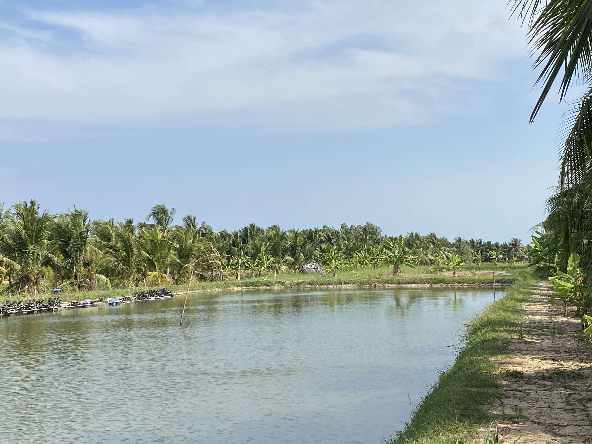
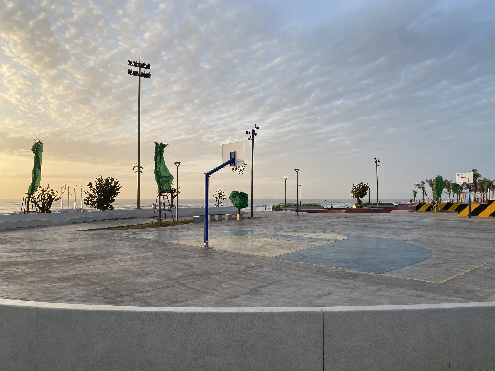
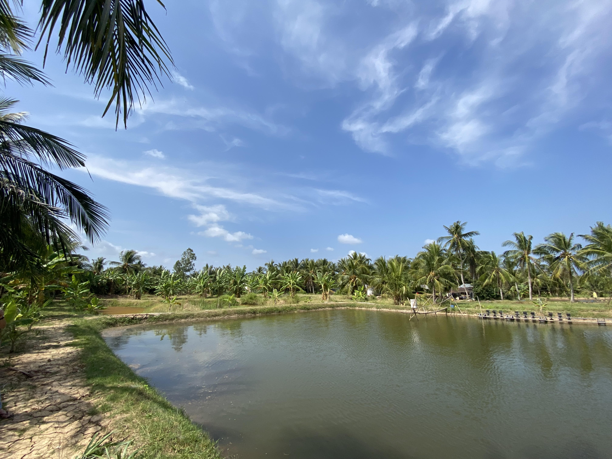

Skyline

Quoc Dien Lake

Basketball court in Vung Tau

That lake but in different angle
Personal Journey
Newly built monument
It was January 23rd, I was visiting back to my hometown (Vung Tau). As I leave this place, the last thing I remember that it was under construction.
I always to see the result of the project as it kills me to not see the last look of the beach. And finally, I saw the completed monument. It was pretty, new and...not the same as it was before I left, gave me a bittersweet feeling.
Cháo huyết (Blood Congee)
Dad's hometown now (Thạnh Phú, Mỹ Hưng), I slept the whole ride there as from the city to the countryside took like 2 hours and we gotta wake up early.
It's tiring, but at least I got to meet my dad's grandma, she's very sweet. The breakfast was also very good, it only have like a cube of pig blood. Sounds
disguting but the soup is pretty good
Trip to old house
The image you're seeing is my house...my old house that is. It has been turned into a place where people could rent in it. Every time I look back at this, it reminds me of my memories and the regret of why didn't I appreciate the time I have left in that house.
It saw me grow up from my childhood till I was 15, my late night studies, my cries, my happiness and my tiredness. It's all a blur and now all I remember is the feeling of warmth and happiness.